Quanto sua moto faz de verdade.
Registre o abastecimento em segundos, até sem sinal. O resto é com a gente: a média certa e o aviso antes da manutenção.
Menos tempo no posto. Mais tempo na estrada.
Como medimos
Tanque cheio a tanque cheio. A conta que não mente.
- Tanque cheio · ponto de partida
- +6,0 L · parcial
- +11,3 L · tanque cheio
-
01
Encha.
O primeiro tanque cheio é o ponto de partida.
-
02
Rode.
Completou só um pouco? Desligue “Tanque cheio” e os litros entram na conta.
-
03
Encha de novo.
Km rodados ÷ litros do trecho. Pronto: a média real.
Fazer a conta a cada abastecimento é mais fácil. E erra sempre que o tanque não enche.
Recursos
Feito para quem roda, não para quem digita.
Registro
Fotografou, registrou.
O iPhone lê o hodômetro e o cupom. Você só confere.
Consumo
Serra ou trânsito? O gráfico conta.
Tanque a tanque, com a média do período e uma referência estimada para motos como a sua.
Manutenção
O app lembra. Você só troca.
Óleo, pneus, relação e freios, por km ou por data. O aviso chega antes de vencer.
Garagem
Uma garagem. Nenhuma confusão.
Cada moto com seu consumo e sua manutenção. Os recordes somam todas.
- Sem cadastro.
- Sem senha.
- Sem anúncios.
- Sem sinal? Sem problema.
Conquistas
Rodar também é colecionar.
25 medalhas. Nenhuma função trancada atrás delas.
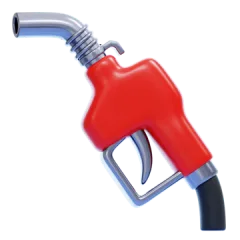
1º abastecimento- 1ª manutenção
- Acima da média
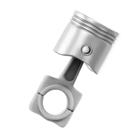
Clube 500cc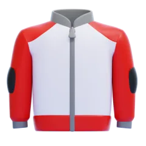
Estradeiro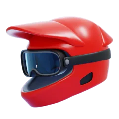
Adventure Rider- Highway Rider
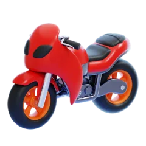
Speed Demon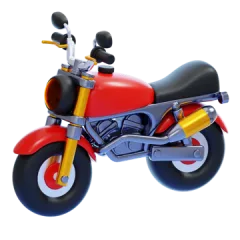
Street Fighter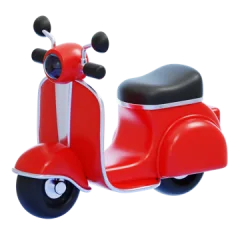
Urban Rider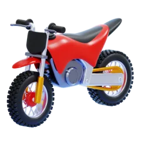
Off-road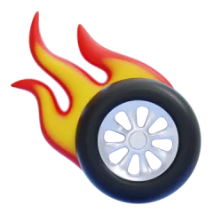
Iron Butt · futuro
No horizonte
A moto leva seus eventos. Você mantém sua história.
Hoje, um diário de bordo. Depois, o passaporte da moto. Nada disso tem data.
-
Entregue · v1.0
Diário de bordo
Consumo, manutenção, garagem e medalhas.
-
Agora
Na App Store
É aqui que você entra.
-
Planejado
Passaporte digital
O histórico passa a ser da moto.
-
Ideias
Além do posto
Viagens, clima e Iron Butt.
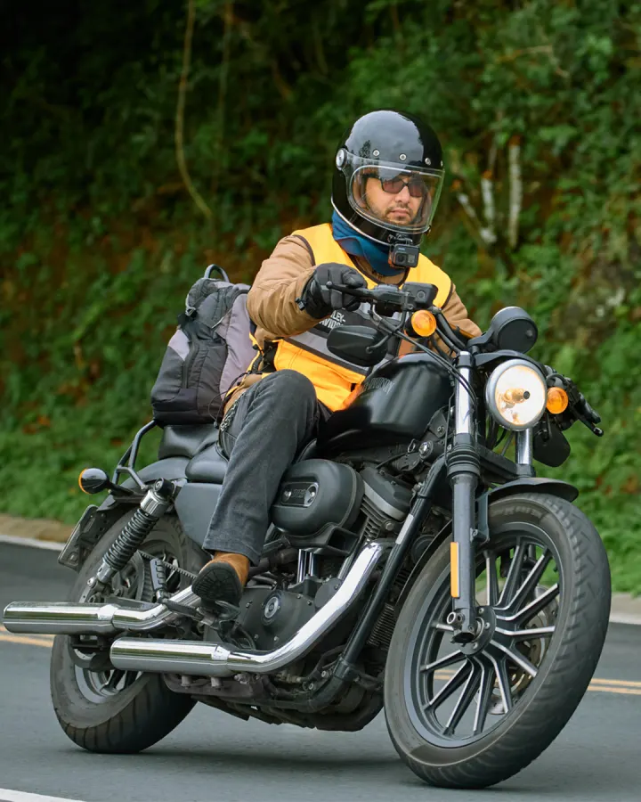
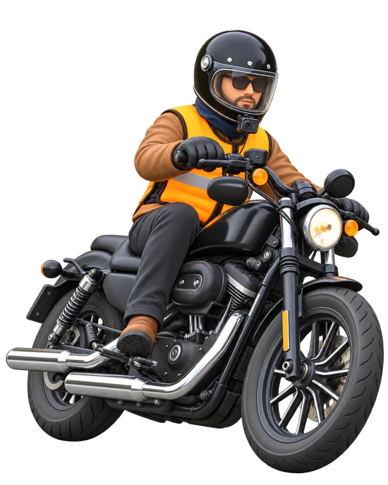
Bastidores
Feito por quem também roda.
Sou Wagner Rosa, product designer e motociclista há mais de duas décadas. Fiz o Carburante por um motivo simples: registrar um abastecimento precisa caber na parada do posto.
Perguntas
Antes de você perguntar.
É grátis?
Sim. O app é grátis na App Store e não tem anúncios, assinando ou não. Quem quiser mais pode assinar o Carburante Premium (opcional): várias motos na garagem, custos completos e ícones de conquista.
Tem para Android?
Não por enquanto. O Carburante é nativo de iPhone de propósito: rápido, leve e com a cara do sistema.
Está disponível fora do Brasil?
Por enquanto, só na App Store do Brasil, e o app está em português. Outros países e idiomas estão nos planos.
Preciso criar conta?
Não. Abriu, usou: o app funciona sem criar conta e sem senha.
Onde ficam meus dados?
Primeiro no seu iPhone, com uma cópia na nuvem isolada na sua conta. As estatísticas de uso são anônimas e dá para desligar nos Ajustes. Detalhes na política de privacidade.
O que acontece com as fotos?
A leitura acontece no próprio iPhone. A foto do cupom não é guardada. A do hodômetro fica como comprovante do registro: no iPhone e numa pasta privada da sua conta na nuvem.
Lê o display da bomba?
Lê, mas ainda não acerta 100%. Reflexo, ângulo e display de segmentos atrapalham. Por isso o app sempre mostra o que leu antes de salvar: você confere e corrige o que precisar. O cupom impresso costuma sair mais preciso.
Use no seu próximo abastecimento.
Grátis na App Store do Brasil. Precisa de um iPhone com iOS 18 ou mais recente.
Baixar na App StoreDúvidas ou sugestões? beta@carburante.motorcycles